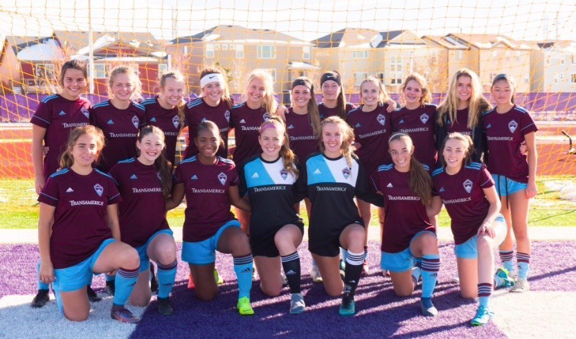
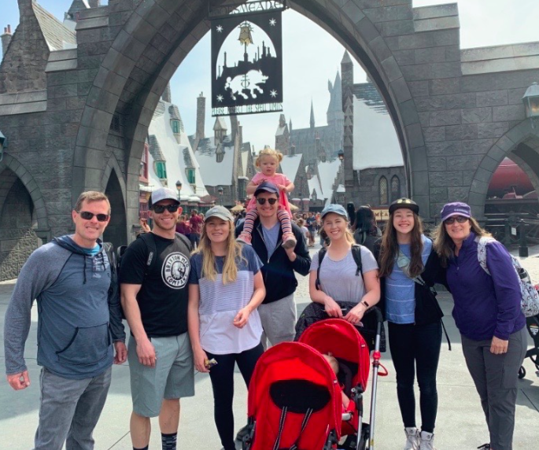

Soccer and Volleyball
I enjoy participating in many sports, but soccer and volleyball are my favorites. My whole family has been involved in team sports since childhood, and I grew up playing with my older siblings. I played soccer throughout my high school years on a club team and on my school team. I am still playing soccer and volleyball in college intramurals.

Tap Dancing
I started tap dancing during my second semester attending BYU. I took a class that was taught by a graduate student and immediately loved it. Since then, I have taken two more tap classes at BYU, and I hope to enroll in more classes over the summer.
Below is a link to my current tap teacher's youtube channel. Her group is called Rhythm Nation Tap Company, and she offers many different classes for adults of all experience levels!
Rhythm Nation Tap Company - Youtube Channel
American Ninja Warrior
I love watching the competition show American Ninja Warrior, in which contestants work their way through an obstacle course while trying to get the best time. Being on the show requires strength, agility, speed, and endurance. I have been training for a few years now, and I hope to audition for the show when I graduate from college.
Below is a video of Isaac Caldiero completing the course and winning the grand prize of $1,000,000. He's one of my favorite competitors and his journey on the show is very inspiring!
Music
Music has always been a passion of mine. I have been learning to play the piano since I was little, and I have recently started learning how to play guitar and ukulele. I hope to be the drummer in a band with my sister in the future.
I also really love listening to music. Some of my favorite genres are pop, indie, rock and roll, and alternative. I love going to concerts with my familly and discovering new artists.
Traveling
I love to travel! I enjoy spending time at the beach, hiking with my family, learning about new cultures, and visiting new places. My family and I frequently go on vacation in Florida to visit Universal Studios and Walt Disney World, which are our favorite travel spots. I will be going to Spain this year, and I'm so excited to see more of the world!

Back to Top